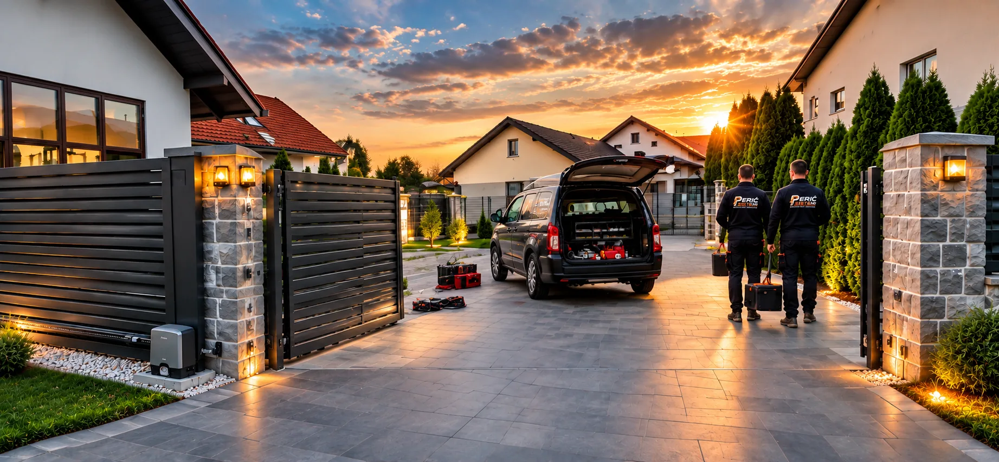
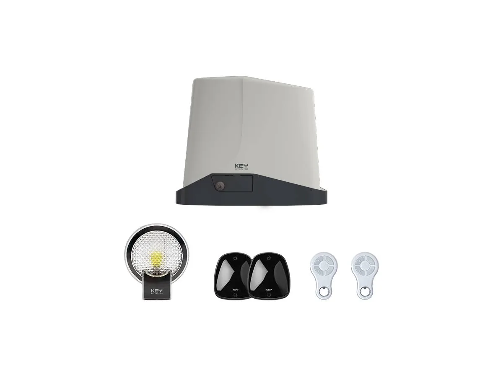
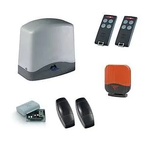
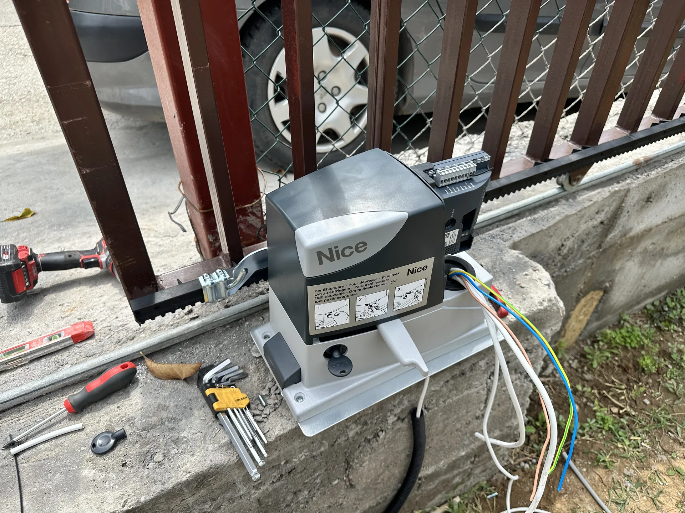
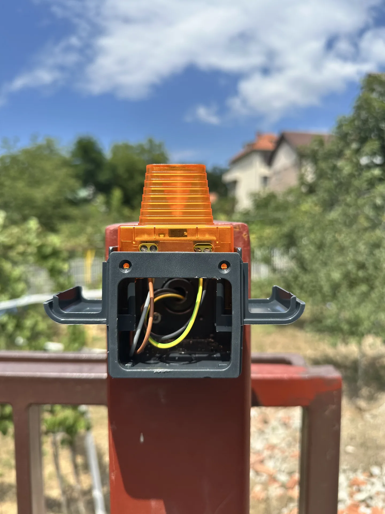
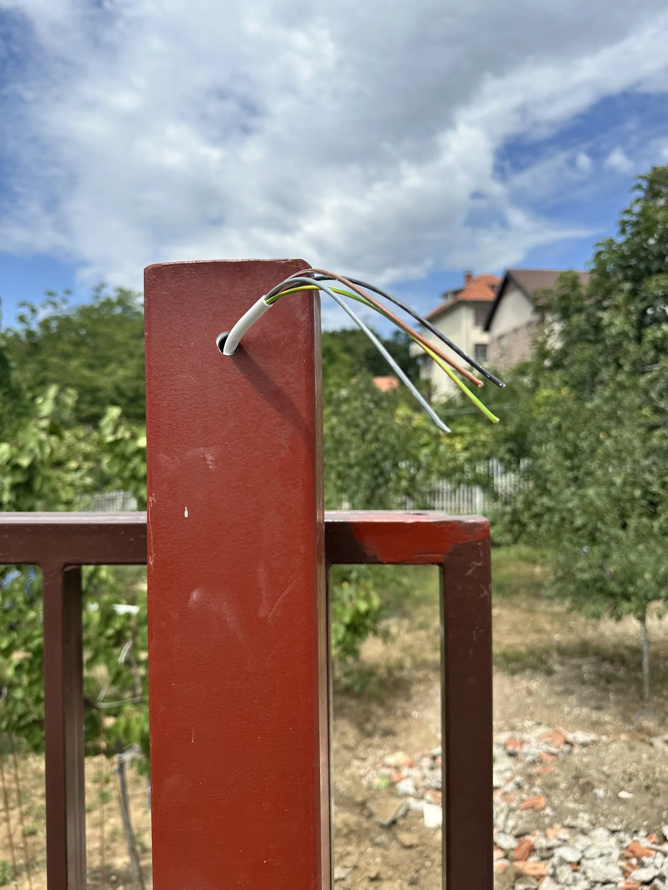
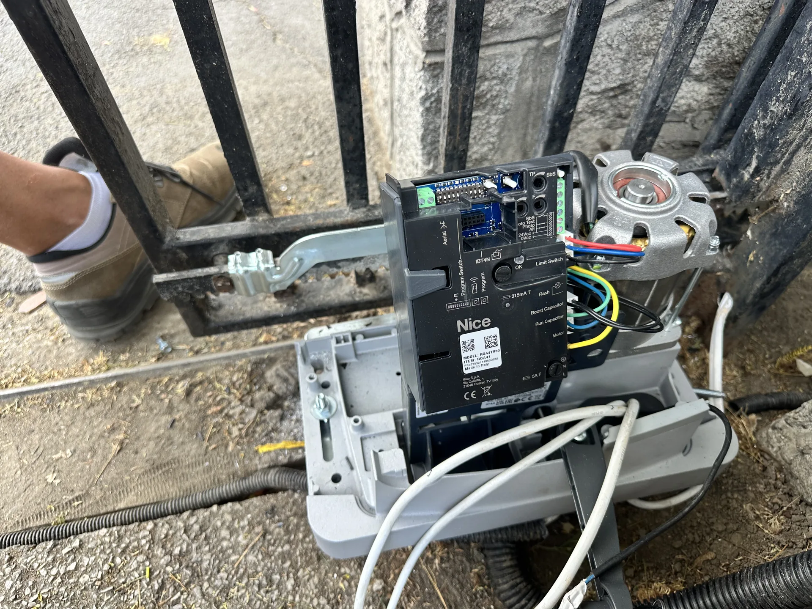

Beograd
Svih 17 gradskih opština – izaberite opštinu i lokalne informacije.
Izaberite opštinu →
Ugradnja automatike za klizne i krilne kapije, motora za garažna vrata Nice Spido i Spider, automatskih parking rampi i elektroinstalacije za automatizovane ulaze. Terenski rad širom Srbije.
Rešenja za privatne kuće, poslovne objekte i druge objekte širom Srbije.
Izbor i montaža pogona za klizne kapije prema masi, dužini, stanju mehanike i intenzitetu korišćenja.
Ugradnja motora za klizne kapije →Automatika za jednokrilne i dvokrilne kapije, sa izborom pogona i sigurnosnih elemenata prema uslovima montaže.
Motori za krilne kapije →FAAC i Nice rampe za privatne parkinge, stambene zgrade i firme. Izbor kraka, pogona i kontrole pristupa prema širini prolaza i intenzitetu rada.
Ugradnja parking rampi →Nice rampe →FAAC rampe →Dijagnostika, podešavanje, održavanje i otklanjanje kvarova na sistemima automatike za kapije i rampe.
Servis automatike →Automatika za segmentna i odgovarajuća podizna vrata, uz izbor Nice Spido i Spider pogona prema dimenzijama i konstrukciji.
Motori za garažna vrata →Priprema kablova, napajanje i povezivanje automatike kapija, garažnih vrata i parking rampi.
Elektroinstalacije →Direktne stranice za najčešće potrebe korisnika.
Jasan proces smanjuje greške u izboru opreme i pripremi instalacije.
Tip, dimenzije, masa, mehanika, intenzitet korišćenja i uslovi na objektu.
Odabir pogona i prateće opreme prema tehničkim zahtevima konkretnog sistema.
Ugradnja pogona, centrale, sigurnosnih uređaja i potrebnih elektroinstalacija.
Programiranje, provera rada i funkcionalno testiranje sistema.
Korisne informacije pre kupovine, pripreme i ugradnje.
Radimo sa proverenim proizvođačima opreme za automatizaciju kapija.
Pogledajte primere montaže i realizovanih radova.






Koristite interaktivni kalkulator za početni izbor motora za klizne i dvokrilne kapije ili FAAC parking rampe. Unesite osnovne podatke i pošaljite rezultat za stručnu proveru.
Izaberite odgovarajuću automatiku →Perić Sistemi posluje iz Kostolca i radi na terenu širom Srbije. Izaberite područje rada ili direktno grad za koji želite da pošaljete upit. Termin i uslovi dolaska potvrđuju se unapred.
Svih 17 gradskih opština – izaberite opštinu i lokalne informacije.
Izaberite opštinu →Kostolac · Požarevac · Smederevo · Veliko Gradište · Golubac · Kučevo · Petrovac na Mlavi · Žagubica · Kovin · Smederevska Palanka · Velika Plana
Pogledajte područje i gradove →Aranđelovac · Kragujevac · Jagodina · Ćuprija · Paraćin
Pogledajte područje i gradove →Valjevo · Šabac · Čačak · Kraljevo · Kruševac · Vrnjačka Banja
Pogledajte područje i gradove →Pančevo · Novi Sad · Petrovaradin · Sremski Karlovci · Ruma · Sremska Mitrovica · Inđija · Stara Pazova · Vršac · Bela Crkva · Zrenjanin · Kikinda · Subotica · Sombor
Pogledajte područje i gradove →Kompletan pregled područja rada – gradovi i regioni u Srbiji →
Instalacija se izvodi uredno i prema tehničkim zahtevima odabrane opreme.
U ponudi su Nice, FAAC, Cardin i Key Automation sistemi.
Po potrebi ugrađujemo fotocelije, signalne lampe i druge elemente zaštite.
Podrška pri podešavanju, održavanju i rešavanju problema sa automatikom.
Poverenje klijenata potvrđuju njihove Google recenzije.
25 Google recenzija
Ocena i broj recenzija prikazani su prema snimku Google profila dostavljenom 7. novembra 2026.
„Razumna cena. Profesionalna, brza, efikasna i pedantna ugradnja motora, koji radi gotovo bešumno.“
Ljubiša Zikić„Miloš je profesionalac u svom zanatu, sve je urađeno profesionalno. Sve pohvale i za majstora i za motor! Vrhunski!“
Dejan Kvas„Sve preporuke! Posao urađen brzo, bez grešaka!“
Matija Popović„Odličan majstor.“
Darko JankovićPrema tipu kapije, masi i dimenzijama, stanju mehanike, intenzitetu rada i uslovima montaže.
Da. Radimo automatizaciju oba tipa kapija, uz izbor opreme prema konkretnoj instalaciji.
Da, kada su predviđeni konkretnim sistemom i prema tehničkim zahtevima proizvođača.
Da. Radimo dijagnostiku i servis u okviru mogućnosti popravke, dostupnosti delova i dokumentacije za konkretan model.
Početna cena automatizacije kapije do 400 kg iznosi od 550 €. Konačna ponuda zavisi od modela, stanja mehanike, sigurnosne opreme i potrebnih radova.
Za kupovinu opreme bez ugradnje, ponudu kompleta, ugradnju ili servis pozovite nas ili pošaljite WhatsApp poruku. Prodaja opreme je dostupna i kupcima koji sami organizuju montažu.
065 576 4215 WhatsApp info@pericsistemi.rs @peric.sistemi Facebook: Perić Sistemi Kupovina opreme – katalog i ponuda Pogledajte sve uslugePolazna baza je Kostolac. Procena, ugradnja i servis obavljaju se na lokaciji objekta uz prethodni dogovor. Ne primamo klijente u maloprodajnoj poslovnici.